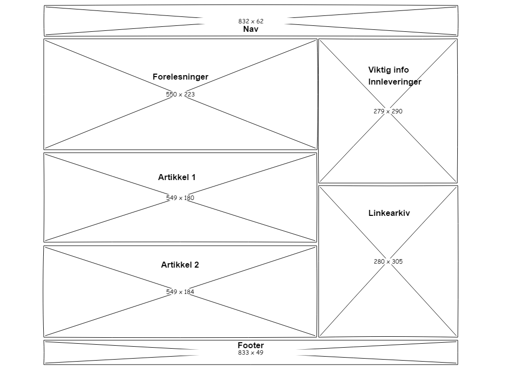

Om denne siden
Jeg leste igjennom hele oblig 2 oppgavene, utifra dette fant jeg ut av hvordan jeg nå ville sette opp nettstedet mitt. I oppgaven sto det at vi skulle ha en oversikt over forelesninger, viktig informasjon, linkearkiv og artikkler. Jeg valgte derfor å ha menyen min helt øverst, deretter legge en kalender for forelesningstimene mine under den. Og alle artikler under der igjen og til slutt en footer. Deretter la jeg den viktige informasjonen og linkearkivet til høyre for kalenderen og alle artikklene.
| Beskrivelse | URL |
|---|---|
| Hentet inspirasjon fra den smale menyen og tomrommmet på hver sin side. | It-avisen |
| Hentet inspirasjon om at menyen skal være like bred som innholdet, men fortsatt tomrom på sidene. | Nettavisen-avisen |
| Hentet inspirasjon fra at de har plassert viktig informasjon på høyre side, men fortsatt har artikkler på venstre. | Graphics design forum |